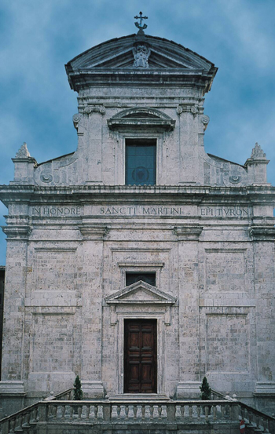

In una fase iniziale, l’urbanizzazione si verifica principalmente lungo il tratto cittadino della via Francigena, la quale nell’XI secolo, scendendo verso sud, non doveva seguire il percorso che dalla Croce del Travaglio giunge a Porta Romana, passando per Banchi di Sotto, via di Pantaneto e via Roma, ma privilegia un tracciato sul crinale della collina, corrispondente più o meno, alle attuali via del Porrione e San Martino, da dove poi prosegue fino al poggio di Montone. Si formano in questo modo una serie di borghi disposti lungo l’asse viario principale e questo vasto burgus, che di fatto si unisce quasi con quello di Camollia a nord, verso sud doveva giungere più o meno fino al Campus Fori (odierna Piazza del Campo), lasciando al di fuori la chiesa di San Martino, localizzata nelle sue vicinanze, e non all’interno, da un documento del 1131.
L’edificio sacro intitolato al vescovo di Tours, costruito ai lati della strada, è testimoniato già nel 1075, per di più come chiesa cardinale, ed e probabilmente ha riunito intorno a sé un piccolo nucleo abitativo, né più né meno secondo lo stesso criterio urbanistico riscontrato anche per altri edifici religiosi come, ad esempio, San Donato e San Cristoforo, che dal secolo successivo cominciamo ad espandersi anche nelle coste sottostanti, creando il primo germe di quello che sarebbe diventato il rione di Salicotto.
D’altra parte un documento del 1158 indica l’odierna via del Porrione con l’appellativo di ruga Sancti Martini, testimonianza inequivocabile che a metà del XII secolo la strada era già abbondantemente urbanizzata; lo attesta anche il fatto che ancora oggi vi si affacciano palazzi in pietra e torri che rimandano a quel periodo, appartenenti quasi sempre a nobili famiglie inurbate.
Anche le vicende costruttive delle mura cittadine sembrano confermare l’ipotesi: se, infatti, il primo ampliamento della cinta urbana rispetto alla civitas alto-medievale, arroccata sui colli di Castelvecchio e del Duomo, comprese solo la chiesa di San Martino, e forse il burgus che gli era sorto intorno, l’ulteriore ingrandimento, solitamente collocato tra la fine del XII e l’inizio del XIII secolo, assorbì l’intero territorio della Torre dentro "il recinto" della città.


 ACCADDE OGGI
ACCADDE OGGI